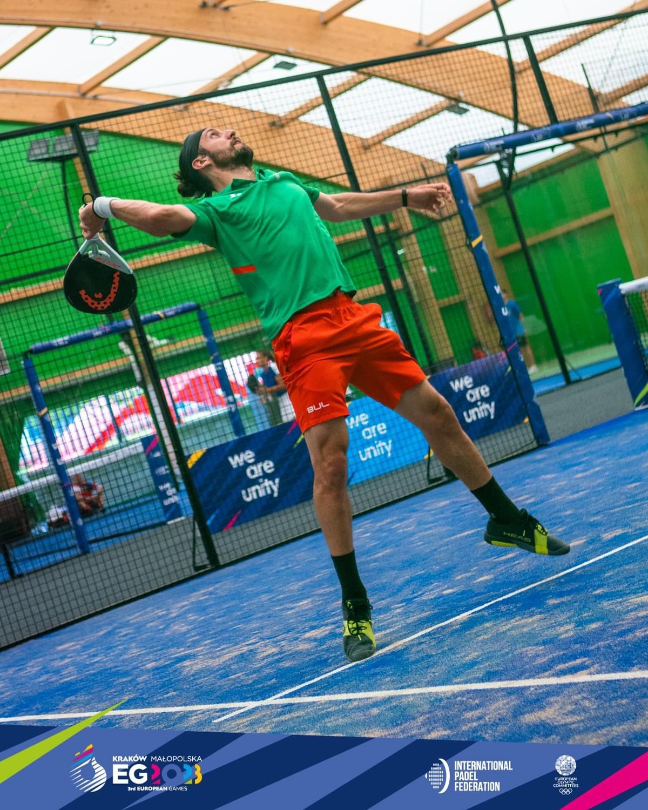
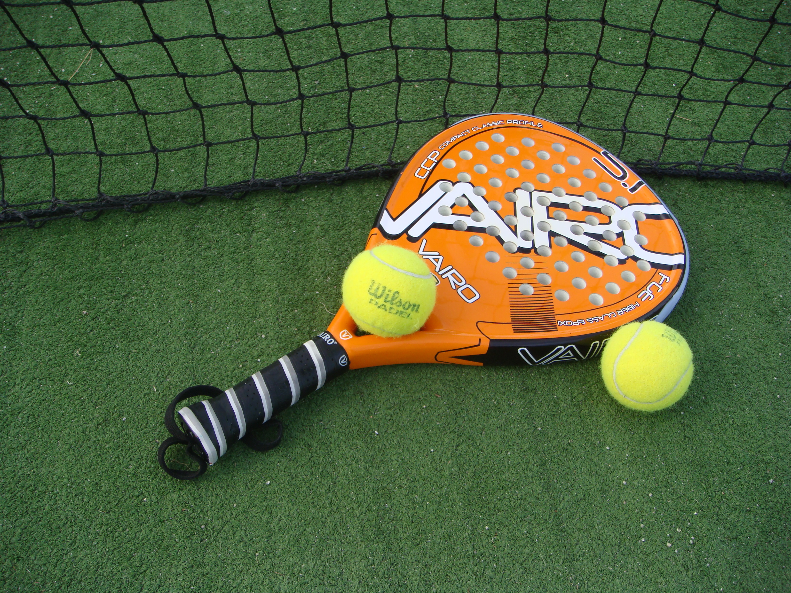
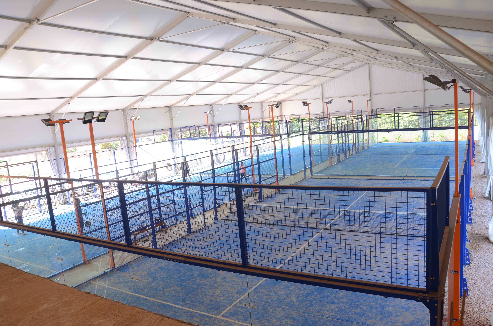

Galeria multimèdia
Aquesta pàgina mostra imatges relacionades amb el pàdel i un vídeo amb normes bàsiques.




Vídeo: normes bàsiques del pàdel
Aquest vídeo resumeix de forma senzilla les regles més importants per començar a jugar.
Crèdits multimèdia
- Imatges de pàdel obtingudes de Wikimedia Commons i incloses dins la carpeta images.
- Vídeo incrustat de YouTube sobre normes bàsiques del pàdel.